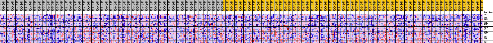

| | | Dataset | my.my.cls#B_versus_A.my.cls#B_versus_A_repos |
| Phenotype | my.cls#B_versus_A_repos |
| Upregulated in class | A |
| GeneSet | KEGG_PROTEIN_EXPORT |
| Enrichment Score (ES) | -0.29552573 |
| Normalized Enrichment Score (NES) | -0.76628196 |
| Nominal p-value | 0.7148515 |
| FDR q-value | 0.75268793 |
| FWER p-Value | 1.0 |
Table: GSEA Results Summary
 Fig 1: Enrichment plot: KEGG_PROTEIN_EXPORT
Fig 1: Enrichment plot: KEGG_PROTEIN_EXPORT
Profile of the Running ES Score & Positions of GeneSet Members on the Rank Ordered List
| SYMBOL | TITLE | RANK IN GENE LIST | RANK METRIC SCORE | RUNNING ES | CORE ENRICHMENT | | 1 | SRP14 | na | 1162 | 0.126 | 0.0780 | No |
| 2 | SEC61A2 | na | 1613 | 0.117 | 0.1620 | No |
| 3 | SRP9 | na | 5111 | 0.085 | 0.1667 | No |
| 4 | SEC61G | na | 6703 | 0.076 | 0.1981 | No |
| 5 | SRP9P1 | na | 10503 | 0.060 | 0.1778 | No |
| 6 | SEC11C | na | 13834 | 0.048 | 0.1563 | No |
| 7 | SEC63 | na | 15819 | 0.041 | 0.1537 | No |
| 8 | IMMP1L | na | 15955 | 0.041 | 0.1835 | No |
| 9 | SPCS2 | na | 18314 | 0.034 | 0.1686 | No |
| 10 | SEC61B | na | 22188 | 0.024 | 0.1187 | No |
| 11 | IMMP2L | na | 23167 | 0.021 | 0.1180 | No |
| 12 | SRP68 | na | 24128 | 0.019 | 0.1156 | No |
| 13 | SEC11A | na | 28318 | 0.008 | 0.0480 | No |
| 14 | SRP54 | na | 31918 | -0.001 | -0.0151 | No |
| 15 | SEC61A1 | na | 38809 | -0.018 | -0.1226 | No |
| 16 | SEC62 | na | 40257 | -0.022 | -0.1310 | No |
| 17 | SRPRB | na | 41701 | -0.026 | -0.1361 | No |
| 18 | SRP19 | na | 45699 | -0.038 | -0.1766 | No |
| 19 | SPCS1 | na | 52431 | -0.069 | -0.2416 | Yes |
| 20 | SPCS3 | na | 54063 | -0.083 | -0.2056 | Yes |
| 21 | HSPA5 | na | 54376 | -0.087 | -0.1433 | Yes |
| 22 | OXA1L | na | 55448 | -0.106 | -0.0796 | Yes |
| 23 | SRP72 | na | 56109 | -0.128 | 0.0090 | Yes |
Table: GSEA details [plain text format]

Fig 2: KEGG_PROTEIN_EXPORT
Blue-Pink O' Gram in the Space of the Analyzed GeneSet
Fig 3: KEGG_PROTEIN_EXPORT: Random ES distribution
Gene set null distribution of ES for KEGG_PROTEIN_EXPORT